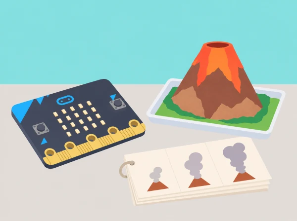

Una erupció en píxels
🏷️ Fenòmens geològics i animació
🌱 Situació, repte i intenció
això no implica activitat eruptiva actual ni risc per a la població.
La seqüència conserva les cinc lliçons de Volcano animations per a alumnat d’uns 8–9 anys: animació i descomposició amb dansa/flipbook, diagrama i repetició, planificació de l’erupció, programació/prova/depuració i reflexió. L’animació del projecte és un model gràfic de quatre estats triats, no una seqüència universal ni una eina de predicció geològica.
🎯 Aprenentatges i vocabulari
- Descompondre un fenomen en fotogrames i ordenar-los perquè una altra persona puga reconstruir-ne el canvi.
- Representar moviment amb una matriu de 5×5 i controlar què canvia entre dos fotogrames.
- Usar una repetició per a mostrar un patró i relacionar-lo amb el diagrama o l’algorisme.
- Provar l’animació en la placa, depurar una transició i explicar que és un model gràfic, no una simulació científica d’una erupció.
🧰 Materials i preparació
BBC micro:bit física o simulador MakeCode, projector opcional, paper per a diagrames i flipbooks, quadrícula 5 × 5, llapis de colors, cartolina per a la maqueta seca i targetes amb els termes magma, lava, erupció i animació. Reviseu abans una font de l’Institut Geogràfic Nacional sobre el fenomen i la seua cartografia; distingiu magma subterrani de lava que arriba a la superfície.
Per al vincle valencià, podeu consultar la documentació de l’IGN que identifica zones volcàniques documentades, inclosos Cofrentes i Columbretes. No suposeu que el volcà de la maqueta representa cap d’aquestes àrees.
Decidiu si tota la classe treballarà amb simulador o si hi haurà transferència a placa; prepareu un projecte base i una alternativa impresa. No useu calor, pólvores, líquids, reaccions químiques ni models que expulsen material. La maqueta és de paper o cartolina i roman estàtica durant la programació.
📅 Seqüència didàctica
Animació i descomposició
Fase 1 · Activem i prediem
Feu una xarxa de paraules al voltant d’“animació” i separeu moviment real, moviment dibuixat i seqüència de fotogrames.
Fase 2 · Explorem i construïm
Una persona demostra un pas de dansa senzill i el grup l’explica com a inici, moviment, pausa i final; no cal que l’alumnat el faça físicament, també pot usar una fitxa o dirigir-lo.
Fase 3 · Expliquem i registrem
Trieu tres poses que comuniquen el canvi i dibuixeu-les amb el mateix enquadrament.
Fase 4 · Apliquem i millorem
Feu un llibret de tres o quatre imatges amb un canvi menut entre pàgines i proveu-lo sense llançar-lo ni sacsejar-lo prop de la cara.
Fase 5 · Comprovem i reflexionem
Expliqueu quina part s’ha descompost i què s’ha omés. Evidència: mapa d’idees, poses numerades i flipbook.
Diagrames de flux i repetició
Fase 1 · Activem i prediem
Ordeneu les imatges del flipbook i detecteu si alguna queda fora de seqüència.
Fase 2 · Explorem i construïm
Convertiu les poses en un diagrama de flux amb inici, mostrar fotograma A, mostrar fotograma B, repetir i final; representeu amb una fletxa de retorn el fragment que es repeteix.
Fase 3 · Expliquem i registrem
Un equip llig només el diagrama i un altre fa de “pantalla”; anoteu què resulta ambigu.
Fase 4 · Apliquem i millorem
Traslladeu els dos fotogrames a la matriu LED, afegiu pauses i compareu un programa que duplica les instruccions amb un altre que usa bucle.
Fase 5 · Comprovem i reflexionem
Indiqueu què ha fet més curt el bucle i quines ordres continuen sent úniques. Evidència: diagrama inicial/depurat i comparació de programes amb/sense repetició.
Planificar l’animació del volcà
Fase 1 · Activem i prediem
Consulteu una infografia o text de l’IGN; localitzeu un cas documentat i una àrea volcànica històrica de la Comunitat Valenciana. Anoteu font i data i no deduïu activitat o perill actual a partir d’un mapa geològic.
Fase 2 · Explorem i construïm
Associeu magma amb material fos sota la superfície i lava amb el material que hi arriba; distingiu aquests termes de la columna de gasos o cendra que pot aparéixer en alguns tipus d’erupció.
Fase 3 · Expliquem i registrem
En equips, definiu quatre estats gràfics —superfície, inici de l’emissió, plomall o flux representat, i escena que es calma— com una convenció visual inventada, sense afirmar que tots els volcans passen per una mateixa seqüència.
Fase 4 · Apliquem i millorem
Dibuixeu cada estat en 5 × 5 píxels, identifiqueu quins quadres es repeteixen i en quin ordre, i creeu un diagrama amb pauses/repetició.
Fase 5 · Comprovem i reflexionem
Una parella comprova que el diagrama coincideix amb l’storyboard. Evidència: font citada, targeta de vocabulari, quatre graelles i algoritme.
Programar, provar i depurar
Fase 1 · Activem i prediem
Abans de programar, llegiu el diagrama i assenyaleu quin fotograma apareixerà després de la repetició.
Fase 2 · Explorem i construïm
Escriviu les icones en MakeCode amb LEDs individuals o graella de disseny; mostreu-les en ordre dins d’un bucle adequat i useu pauses suficients per llegir-les.
Fase 3 · Expliquem i registrem
Executeu al simulador o transferiu a micro:bit, marqueu cada eixida respecte del storyboard i comproveu si el bucle repeteix exactament el fragment indicat.
Fase 4 · Apliquem i millorem
Proveu tres casos: fotograma canviat d’ordre, una repetició de més i pausa massa curta; canvieu una cosa cada vegada i registreu el resultat.
Fase 5 · Comprovem i reflexionem
Justifiqueu una correcció i una simplificació. Evidència: codi, prediccions i registre de tres casos provats.
Reflexió i revisió
Fase 1 · Activem i prediem
Feu un mapa de pensament des de la font fins a l’animació: investigar, seleccionar fases gràfiques, dissenyar píxels, escriure algoritme, programar, provar i revisar.
Fase 2 · Explorem i construïm
Cada equip mostra el mapa, el codi i el vídeo/demostració de la seqüència; si no es grava, la mostra es fa en directe o amb una sèrie de captures autoritzades, sense fotografiar alumnat.
Fase 3 · Expliquem i registrem
El públic comenta una cosa clara i formula una pregunta sobre el model científic o el bucle.
Fase 4 · Apliquem i millorem
Reviseu el storyboard i el programa amb el retorn rebut. Trieu una proposta concreta, com ara fer més llegible una transició o allargar una pausa, i decidiu si millora la representació del procés. Abans de canviar el codi, anoteu què espereu que passe; després, compareu el resultat nou amb l’anterior. Si rebutgeu la proposta, justifiqueu-ho amb un criteri del projecte (claredat, coherència amb la font o ritme de lectura), no amb una preferència personal sense explicar.
Fase 5 · Comprovem i reflexionem
Completa “el meu codi representa…, no pot predir…, la repetició m’ha servit per…”. Evidència: mapa final, retorn i reflexió.
🧪 Evidències i avaluació
Recolliu mapa d’idees, flipbook, diagrama de flux, font geològica citada, storyboard, quatre graelles, MakeCode, registre de proves i mapa de reflexió. Observeu si l’equip (1) divideix una acció en passos representables; (2) mostra en el diagrama què es repeteix; (3) tradueix fidelment l’algoritme a blocs i comprova tres casos; (4) usa el vocabulari magma/lava de manera coherent amb la font; i (5) identifica què ha simplificat la seua animació.
No s’avalua si la seqüència és una reconstrucció universal d’una erupció: és una interpretació didàctica.
♿ Participació, accessibilitat i seguretat
Oferiu storyboard imprés, animació estàtica, simulador i pauses llargues; no és necessari veure estímuls ràpids. Rols possibles: lector/a de font, dibuixant de graelles, autor/a de flux, programador/a, provador/a o narrador/a. Es pot dictar o ordenar targetes en lloc de fer un flipbook manual. No hi ha cap experiment físic volcànic, foc, calor ni substàncies. Si el tema de riscos naturals resulta sensible per a alguna persona, es pot animar un procés geològic no amenaçador amb els mateixos conceptes d’algoritme.
🔗 Referents i adaptació
Volcano animations té cinc lliçons: mapa d’idees i descomposició d’una dansa en flipbook; diagrama de flux i repetició en MakeCode; planificació desconnectada de fases d’una erupció; programació, prova i depuració LED; i revisió descomposta del procés. Aquesta proposta conserva l’ordre i els aprenentatges, crea el storyboard i els criteris i afegeix una comparació contextual basada en fonts geològiques. L’IGN documenta Cofrentes i Columbretes dins de les àrees volcàniques de l’Estat;
es presenten com a patrimoni geològic, no com a volcans en erupció o perill immediat. Consulteu la catàleg històric de l’IGN i la seua secció educativa de volcans.